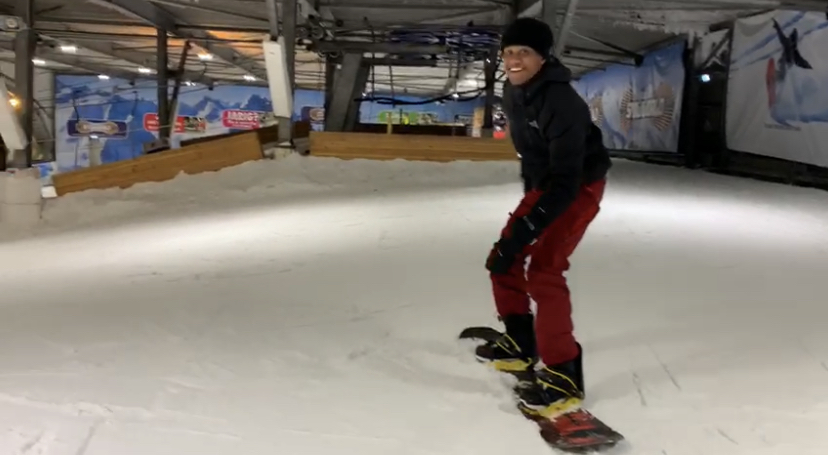
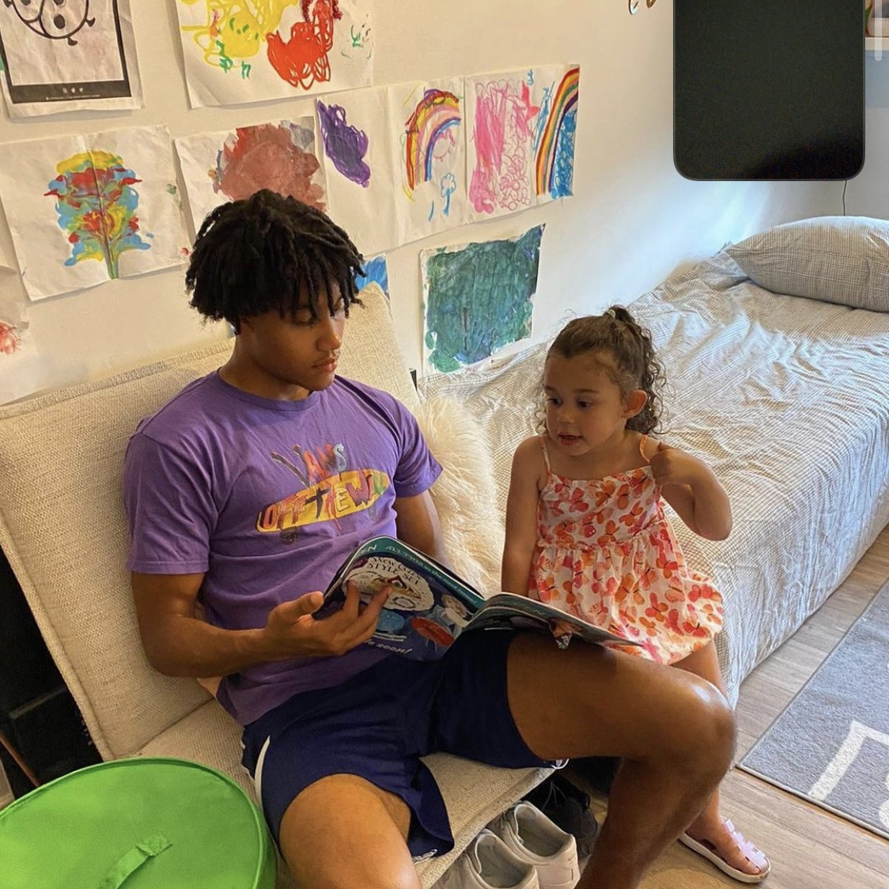

Hobbies

Sporten
Ik sport al sinds dat ik 4 jaar oud ben. Ik heb meerdere sporten zoals, kempo, zwemmen, Thai-boxen, fitness en voetbal gedaan. Op dit moment doe ik voornamelijk fitnessen en voetballen.
Snowboarden
Ik snowboard nu al 4 jaar. Ik ben begonnen toen ik met school naar Oostenrijk op wintersportvakantie ging. Sindsdien probeer ik een paar keer per jaar naar snowworld te gaan. Als het lukt wil ik ook weer naar het buitenland om daar te snowboarden maar corona steekt er tot nu toe steeds een stokje voor.